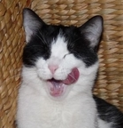

Petichat Gropapatte
Majorcat particulier
Mon expérience
- Depuis 2016 : Majorcat à Pioupiouland
- De 2012 à 2016 : Apprentissage de la chasse avec NeeNee Pataleau
- De 2010 à 2012 : Globetrotting
- De 2009 à 2010 : Formation Petitchacrobate
- De 2008 à 2009 : Année sabatique - Méditation intensive
- De 2007 à 2008 : Apprentissage trolleries et kawaiieries
Mes compétences
- Fonctions principales du métier de majorcat (accueillir à la porte, accompagner au lit)
- Elagage d'arbres à chats
- "Grif'art" (sur la peau principalement et à mes heures perdues)
- Toilette intime (occupe la majeure partie du temps)
- Sélection de croquettes une par une avec la patte pour manger
- Catballer professionnel
- Coups de tête et toilette du front de ma maîtresse
- Dormir assis avec un léger mouvement de balancé (méditation level 85)
- Ramener des prises de chasse à ma maîtresse (cousins principalement)
- Discuter avec les mouches
- Avertir de l'arrivée éventuelle de fumé malodorant au sortir de la litière par des hurlements de loup et des couinements de singe
Ma formation
Formation en grande partie autodidacte, sauf pour la chasse avec NeeChanSensei